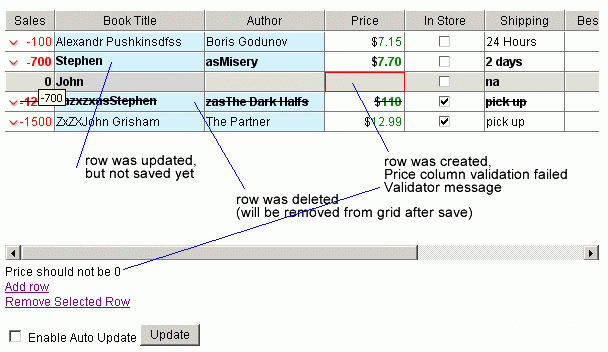
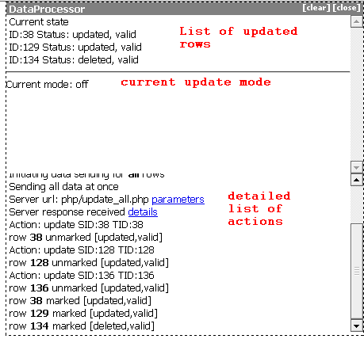

DataProcessor
A DataProcessor is a small library that can integrate ghtmlxGrid with the server side backend. The library monitors changes in the grid and uses a simple protocol to interchange with the server side code. The DataProcessor consists of the following two parts:
- Client side code that is common for any use-case;
- Server side code that works by the same principles but needs to be adjusted to used business-logic.
Data Processing and Link with Server Datasource
There is an add-in for dhtmlxGrid that manages the process of updating data on the server side.

Main Features:
- Updated/Inserted row is marked with the bold text, deleted one is marked with line-through;
- The user can set validation functions on any column. By default, it validates whether the specified cell has a value. If validation failed, casual cell is marked with a red border;
- Mode for data processing can be defined in the following way:
- cell – when cell editing is finished, it checks whether all mandatory cells in the row got their values, whether these values have passed the validation, and if yes, the mode sends data to the server;
- row – the same as described in the previous point, but it occurs when row selection is changed or Enter button pressed;
- off – means that there is no automatic data sending, all updated/deleted data is sent to the server on calling the script method (the user can assign it to a button, so he can choose when to save);
- Updated/deleted rows data is sent to the server to the URL specified by the user (it is called serverProcessor). serverProcessor should return a simple XML of the specified format to let the grid know about successful/not successful processing. All necessary after-save procedures will be done automatically.
Client Side Initialization
To initialize DataProcessor and attach it to the grid, the following two commands can be used:
var dp = new dataProcessor(url); dp.init(grid);
Where:
- url - a relative or absolute path to the server side component of the DataProcessor;
- grid - a dhtmlxGrid object.
By default, the DataProcessor will be initialized in the auto update mode which means that after each change in the grid it will send data to the server. In some cases, it makes sense to use the manual update mode:
dp.setUpdateMode("off") //... dp.sendData();
In such case, the DataProcessor will store the information about all changes in the grid, but will send them to the server only after sendData() method is executed.
Re\Definition of actions
There are built-in actions in dhtmlxDataProcessor that are used during data processing:
- update - occurs after a row was updated on the server;
- delete - occurs after a row was deleted on the server;
- insert - occurs after a row was inserted on the server.
The user can define his own handlers for each of them by
DataProcessor.defineAction("update",myHandler);
In such case, myHandler will be called after update operations, returning true from custom handler will allow default update actions.
The user is able to define any other action himself. All he needs is to use the following syntax in the XML returned by the server side:
<data> <action type='[action name]'> anything </action> </data>
The following JavaScript code should also be used:
DataProcessor.defineAction("[action name]",myHandler);
myHandler function will be called and get <action> tag object as incoming argument.
Adjusting Server Side Code
The default package contains an example of the server side code for PHP (by additional request, the similar code for JSP|ColdFusion|C#.Net|RybyOnRails can be sent). The code does the following three tasks:
- Takes parameters from the incoming request;
- Makes necessary DB operation;
- Returns information about the operation result.
The incoming parameters are:
- gr_id - id of a row in the grid for which some operation is executed;
- !nativeeditor_status - the status of the operation;
- inserted - the row in question was added;
- deleted - the row in question was deleted;
- … any other value … - the row was updated;
- c0 - the data of the first column in the updated row;
- c1 - the data of the second column in the updated row;
- ….
- cN - the data of the (N+1)th column in the grid.
All these parameters are part of GET request.
Based on the value of !nativeeditor_status, the related section of the server side logic is triggered.
The response must be in the following format:
<data> <action type="some" sid="some" tid="some" /> </data>
Where:
- type - the type of the operation (it may be “insert”, “update”, “delete”);
- sid - the original id of the row (the same as gr_id);
- tid - the id of the row after the operation (may be the same as gr_id, or some different one - it can be used during a new row adding, when a temporary id created on the client side is replaced with the id taken from the DB or by any other business rule).
The response must be a valid XML in order to be processed correctly.
Debug Mode
To debug dataprocessor, just include both
- dhtmlxdataprocessor.js
- dhtmlxdataprocessor_debug.js
It will provide debug console similar to next

Data Sending Modes
The following data sending modes are available:
- Using Meaningful Names;
The parameters c0-cN, used by default, are not very useful on the server side. The DataProcessor allows to use grid column ids instead of them:
grid.setHeader("Name of the book,Name of the author"); grid.setColumnIds("book,author"); //... dp.enableDataNames(true);
On the server side it will look like this:
$_GET['c0'] => $_GET['book'] $_GET['c1'] => $_GET['author']
- Using POST instead of GET;
POST can be used instead of GET in the following way:
dp.setTransactionMode("POST");
- Sending All Data at Once.
By default, update for each row will be sent as a separate request. This means that when 20 rows are updated - 20 requests will be sent to the server. This is not the best approach, so instead of it a single (more complex) request can be sent to the server side:
dp.setTransactionMode("POST",true); // or dp.setTransactionMode("GET",true);
In such mode, the server side receives a slightly different set of parameters:
- ids - a comma separated list of updated rows ids, for each id there will be the set of details in the request.
For example, if the user has two updated rows on the client side with ids = r2 and r3, the server side code will receive:
ids = r2,r3
- r2_!nativeeditor_status - the status of the operation for row r2;
- r2_c0 .. r2_cN - the data for a column of row r2;
- r3_!nativeeditor_status - the status of the operation for row r3;
- r3_c0 .. r3_cN - the data for a column of row r3.
The awaited server side response should be in the same format as usual, but should include data for all processed rows:
<data> <action type="some" sid="r2" tid="r2" /> <action type="some" sid="r3" tid="r3" /> </data>
Custom Server Side Responses
The DataProcessor has the following predefined response modes:
- Update;
- Insert;
- Delete.
But in some (many) cases, the user will need a way to return some additional information (the most common use-case - an error during a DB operation). In such case, an additional response type can be introduced:
dp.defineAction("error",my_action);
Where my_action is a custom function that will be called when the response of “error” type is received.
<data> <action type="error" sid="id" tid="id">Details</action> </data> <code javascript> function my_action(node){ alert(node.getAttribute("action")); // error alert(node.firstChild.data); // Details return false; }
Common Errors
The following common error can be enumerated:
- Incorrect XML Error;
The most probable reason: it is caused by some server side error that breaks the XML. The user can enable the debug mode and check the response of the server side to receive more information.
- Deleted Rows not Removed from Grid;
Actually, it is not an error as the rows will be removed only after synchronizing with the server.
- Deleted Rows not Removed from Grid after Synchronizing with Server (updated|inserted rows stay bold;)
The most probable reason: incorrect values of the “action” attribute in the response XML.
- JS Error after Synchronizing with Server.
The most probable reason: incorrect values of the “sid” and the “tid” attributes in the response XML.
Data Processing and Server Errors Handling
To handle a server side error with dhtmlxDataProcessor, the user can implement his own callback events (events that occur on the client side after server side's processing) on the client side:
DataProcessor.defineAction("error_123",myHandler);
On the server side, in case of an error you should return
<data> <action type="error_123"> any info </action> <data/>
In this case, myHandler function will be executed on the client side in case of an error (error_123). It will get the following as parameter(s):
- Action tag object
Returning false from myHandler function will prevent default event processing.